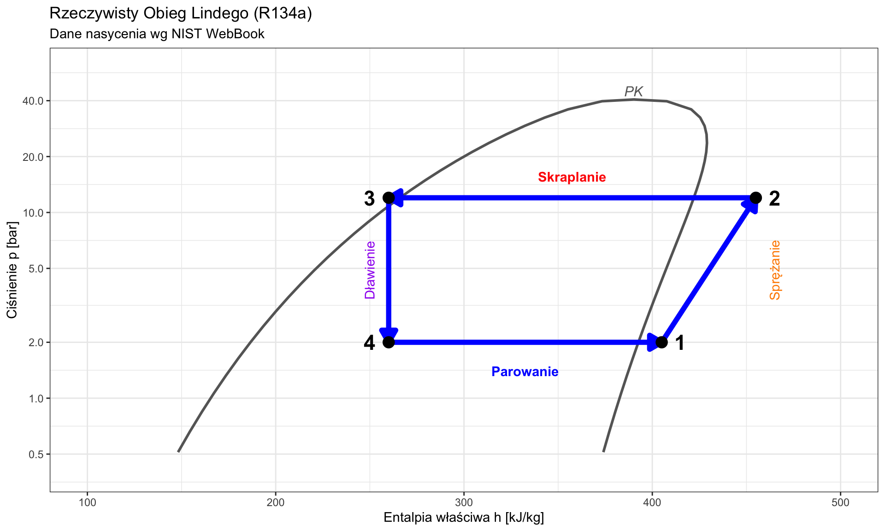
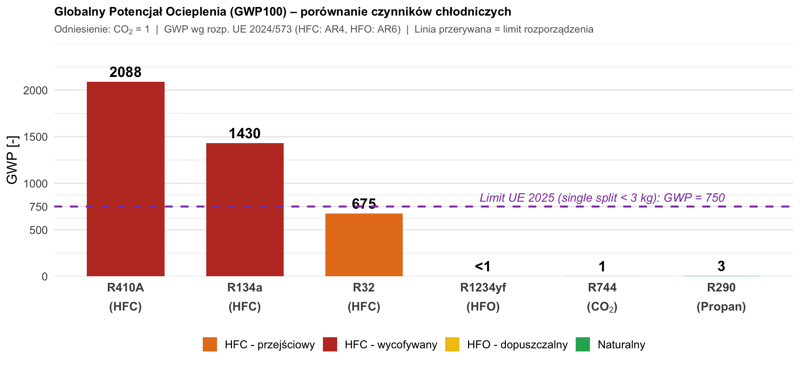

W11: Chłodnictwo i Pompy Ciepła
Obiegi Lewobieżne w Praktyce Inżynierskiej
prof. UPP dr hab. inż. Marek Urbaniak
Wydział Inżynierii Środowiska i Inżynierii Mechanicznej


Agenda Wykładu
- Termodynamika Chłodzenia (Transport “pod górę”, COP)
- Idealny Obieg Chłodniczy (Odwrócony Carnot)
- Rzeczywisty Obieg Sprężarkowy (Linde, Dławienie J-T)
- Wykres log(p)-h (Analiza, Obliczenia)
- Modyfikacje Obiegu (Dochłodzenie i Przegrzanie)
- Czynniki Chłodnicze (Freony vs Eko)
- 6a. Metryki ODP i GWP · 6b. Cztery generacje czynników
- 6c. Wykres GWP · 6d. Parametry i klasy bezpieczeństwa
- 6e. R290 i monobloki · 6f. Harmonogram F-gazów (UE 2024/573)
- Pompy Ciepła (Zastosowanie grzewcze)
1. Idea Chłodzenia (Obieg Lewobieżny)
Zgodnie z II Zasadą Termodynamiki (Clausius), ciepło nie płynie samorzutnie od ciała zimniejszego do cieplejszego.
- Proces wymuszony: Aby przenieść ciepło z temperatury niższej (\(T_L\)) do wyższej
(\(T_H\)), musimy dostarczyć energię z zewnątrz (pracę \(L\)). - Kierunek: Obieg przebiega odwrotnie do ruchu wskazówek zegara
na wykresie p-v.
Cel i Koszt
- Chłodziarka: Utrzymuje \(T_L < T_{\text{otoczenia}}\). Celem jest ciepło odebrane (\(Q_L\)).
- Pompa Ciepła: Ogrzewa pomieszczenie. Celem jest ciepło oddane (\(Q_H\)).
Mierniki Efektywności (COP)
W urządzeniach chłodniczych sprawność może przekraczać 1, dlatego używamy COP (Coefficient of Performance).
Chłodziarka (\(\varepsilon_{ch}\))
\[ \text{COP}_{ch} = \frac{\text{Cel}}{\text{Koszt}} = \frac{Q_L}{|L|} \]
Dla domowej lodówki
\(\text{COP} \approx 2\text{–}3\). (1 kW prądu “przepompowuje” 3 kW ciepła).
Pompa Ciepła (\(\varepsilon_{g}\))
\(\text{COP}_{g} = \frac{Q_H}{|L|} = \frac{Q_L + |L|}{|L|}\)
Zależność: \[ \text{COP}_{g} = \text{COP}_{ch} + 1 \]
Terminologia: EER
W branży chłodniczej i HVAC zamiast \(\text{COP}_{ch}\) często stosuje się termin EER (Energy Efficiency Ratio). To ta sama wielkość fizyczna — stosunek wydajności chłodniczej do mocy napędowej. EER wyznacza się w warunkach badania wg PN-EN 14511 (temperatury nośników, np. klimatyzator powietrze–powietrze: 35 °C na zewnątrz, 27 °C wewnątrz); sezonowy SEER — wg PN-EN 14825.
2. Dlaczego nie Carnot?
Odwrócony obieg Carnota ma teoretycznie najwyższe COP. Dlaczego go nie budujemy?
Problem 1: Sprężanie pary mokrej
Wymagałoby sprężarki, która radzi sobie z kropelkami cieczy. Skutek: Kropelki cieczy niszczą łopatki/tłoki (“uderzenia hydrauliczne”).
Problem 2: Rozprężanie w turbinie
Mały zysk energii (ciecz ma małą objętość właściwą). Skutek: Koszt turbiny przewyższa zysk energetyczny.
Rozwiązanie Inżynierskie
Zastępujemy turbinę zaworem dławiącym, a sprężanie realizujemy w obszarze pary suchej. Tak powstaje Obieg Lindego.
3. Obieg Lindego (Kompresorowy)
Standard przemysłowy (lodówki, klimatyzatory, pompy ciepła).
Schemat Przemian:
- 1-2 Sprężarka: Izentropowe (adiabatyczne odwracalne) sprężanie pary suchej (\(s=const\)).
- 2-3 Skraplacz: Izobaryczne oddawanie ciepła (\(p=const\)). Czynnik skrapla się.
- 3-4 Zawór Rozprężny: Izentalpowe dławienie (\(h=const\)).
- 4-1 Parownik: Izobaryczne wrzenie (\(p=const\)). Pobranie ciepła \(Q_L\).
Zjawisko Dławienia (Joule-Thomson)
W elemencie dławiącym (zawór rozprężny lub rurka kapilarna) wykorzystujemy efekt Joule’a-Thomsona.
- Proces: Przepływ bez wymiany ciepła (\(Q=0\)) i bez pracy (\(L_t=0\)).
- Bilans I Zasady: \[ h_3 = h_4 \quad (\text{entalpia stała}) \]
- Efekt: Dla czynników chłodniczych spadek ciśnienia powoduje spadek temperatury i częściowe odparowanie cieczy (powstaje para mokra o małym stopniu suchości \(x\)).
To strata egzergii (proces nieodwracalny), ale zyskujemy ogromną prostotę konstrukcji.
4. Wykres log(p)-h
Podstawowe narzędzie inżyniera chłodnictwa i HVAC. Oś Y w skali logarytmicznej (log p) obejmuje szeroki zakres ciśnień, a izobary są na niej liniami poziomymi; oś X (h) pozwala odczytywać ciepło i pracę jako odcinki.
Kluczowe odległości na wykresie:
- Praca sprężania: \(l = h_2 - h_1\) (Rzut poziomy krzywej sprężania).
- Efekt chłodniczy: \(q_L = h_1 - h_4\) (Długość odcinka parowania).
- Ciepło skraplania: \(q_H = h_2 - h_3\) (Długość górnego odcinka).
Wizualizacja: Obieg na p-h

5. Modyfikacje Rzeczywiste
W praktyce punkty 1 i 3 wychodzą poza obszar mokry:
A. Przegrzanie Par (Superheating)
Para na ssaniu do sprężarki (pkt 1) jest przegrzewana powyżej temperatury nasycenia.
- Cel: Gwarancja, że do cylindra nie trafi ani kropla cieczy.
B. Dochłodzenie Cieczy (Subcooling)
Ciecz za skraplaczem (pkt 3) jest dochładzana.
- Cel: Zwiększenie różnicy entalpii w parowniku (\(h_1 - h_4\)) bez dodatkowej pracy sprężarki.
- Wynik: Wzrost COP.
6. Czynniki Chłodnicze
Substancja musi wrzeć w niskiej temperaturze (np. \(-20\,^\circ\text{C}\)) i skraplać się w wysokiej (\(40\,^\circ\text{C}\)) przy rozsądnych ciśnieniach.
| Generacja | Czynnik | ODP | GWP | Status | Zastosowanie |
|---|---|---|---|---|---|
| CFC | R12 | 1,0 | 10 900 | ⛔ Zakazany | — |
| HCFC | R22 | 0,05 | 1 810 | ⛔ Zakazany w UE (od 2015 r.) | Stare klimat. |
| HFC | R134a | 0 | 1 430 | ⚠️ Wycofywany | Klimatyzacja |
| HFO | R1234yf | 0 | < 1 | ✅ Aktualny | Motoryzacja |
| Naturalny | R717 (NH₃) | 0 | 0 | ✅ | Przemysł |
| Naturalny | R744 (CO₂) | 0 | 1 | ✅ | Supermarkety |
| Naturalny | R290 (Propan) | 0 | 3 | ✅ | Pompy ciepła |
GWP100 wg IPCC AR4 (dla HFO — AR6), jak w rozporządzeniu (UE) 2024/573.
Trend
Przyszłość to czynniki naturalne (GWP ≈ 0) i HFO (GWP < 10). Rozporządzenie UE F-Gas (2024/573) wymusza stopniowe wycofanie HFC z rynku UE do 2050 r.
6a. Metryki Ekologiczne: ODP i GWP
Dwa parametry decydują o dopuszczalności stosowania czynnika chłodniczego.
ODP — Potencjał Niszczenia Ozonu
Miara zdolności substancji do niszczenia stratosferycznej warstwy ozonowej.
Odniesienie: R11 (CFC-11) → ODP = 1,0
- Czynniki CFC (R12): ODP = 1,0 ⛔ Zakazane (Protokół z Montrealu)
- Czynniki HCFC (R22): ODP = 0,05 ⛔ Zakazane w UE (od 2015 r.)
- Czynniki HFC, HFO, naturalne: ODP = 0 ✅
GWP — Potencjał Globalnego Ocieplenia
Miara wpływu na efekt cieplarniany w horyzoncie 100 lat.
Odniesienie: CO₂ → GWP = 1
- R410A: GWP = 2 088 → 1 kg wycieku ≈ 2 t CO₂ ⛔
- R134a: GWP = 1 430 ⚠️
- R290 (Propan): GWP = 3 → de facto neutralny ✅
ODP rozwiązało problem ozonu (Protokół z Montrealu, 1987). Teraz walczymy z GWP — rezygnacja z HFC stała się koniecznością.
6b. Cztery Generacje Czynników Chłodniczych
| Generacja | Okres | Przykłady | ODP | GWP | Status |
|---|---|---|---|---|---|
| I — Naturalne | 1830–1930 | NH₃, CO₂, R290 | 0 | ≤3 | ⚠️ Toksyczność / palność |
| II — CFC/HCFC | 1930–1990 | R12, R22 | >0 | >1800 | ⛔ Dziura ozonowa |
| III — HFC | 1990–2010 | R134a, R410A, R32 | 0 | ≥675 | ⛔ Efekt cieplarniany |
| IV — HFO + Powrót natury | Dziś | R1234yf, R290, R744 | 0 | <10 | ✅ Akceptowalne |
Historia zatoczyła koło: branża chłodnicza wraca do czynników naturalnych z I generacji,
wyposażona w nowoczesne technologie bezpieczeństwa (monobloki, strefa ATEX).
6c. GWP Wybranych Czynników Chłodniczych

6d. Parametry Techniczne i Klasy Bezpieczeństwa
| Czynnik | Typ | GWP | \(p_{kr}\) [bar] | \(T_{kr}\) [°C] | Klasa | Uwagi |
|---|---|---|---|---|---|---|
| R410A | HFC | 2 088 | 49,0 | 72,1 | A1 | ⛔ Zakaz w nowych klimatyzatorach single-split < 3 kg od 2025 r. |
| R134a | HFC | 1 430 | 40,6 | 101,1 | A1 | ⚠️ Wycofywany |
| R32 | HFC | 675 | 57,8 | 78,1 | A2L | ⚠️ Przejściowy |
| R1234yf | HFO | < 1 | 33,8 | 94,7 | A2L | ✅ Motoryzacja |
| R744 (CO₂) | Nat. | 1 | 73,8 | 31,1 | A1 | ✅ Przemysł |
| R290 (Propan) | Nat. | 3 | 42,5 | 96,7 | A3 | ✅ Monobloki PC |
GWP100 wg IPCC AR4 (dla HFO — AR6), jak w rozporządzeniu (UE) 2024/573.
Klasy bezpieczeństwa ASHRAE 34:
| Kod | Znaczenie |
|---|---|
| A | niska toksyczność |
| 1 | niepalny |
| 2L | słabo palny |
| 3 | wysoce palny |
A1 (R134a, R410A) — bezpieczny, lecz GWP > 1000 ⛔
A3 (R290) — zwykle w monoblokach (ograniczenie napełnienia), ale GWP = 3 i COP porównywalny lub do ~10% wyższy niż R410A ✅
6e. R290 — Propan jako Czynnik Przyszłości
Dlaczego Propan?
- GWP = 3 — praktycznie neutralny klimatycznie
- COP porównywalny lub do ~10% wyższy niż R410A
- Temperatura zasilania do 75°C → stare grzejniki ✅
- Praca stabilna do –25°C zewnętrznych
- Propan (R290 = propan o czystości chłodniczej) — powszechnie dostępny i tani
Klasa A3 — wysoce palny:
Dolna granica palności 1,7% obj. w powietrzu.
Rozwiązanie: minimalne napełnienie + hermetyczność + detekcja.
Technologia Monobloku
Cały obieg R290 hermetycznie zamknięty w zewnętrznej jednostce (strefa ATEX).
Do wnętrza domu wchodzi tylko woda grzewcza.
6f. Harmonogram F-gazów (UE 2024/573)
📅 F-Gas UE 2024/573:
- od 2025 r. — zakaz czynników o GWP ≥ 750 w nowych klimatyzatorach single-split < 3 kg (np. R410A),
- zakaz F-gazów w nowych małych klimatyzatorach i pompach ciepła (z wyjątkami bezpieczeństwa):
- monobloki (≤ 12 kW) — od 2032 r.,
- systemy split — od 2035 r.,
- stopniowe wycofanie HFC z rynku UE — do 2050 r.
R290 i CO₂ — standard technologiczny dekady.
7. Pompy Ciepła
“Lodówka wywrócona na lewą stronę” — to samo urządzenie, inny cel.
Chłodziarka
\(\text{COP}_{ch} = \frac{Q_L}{L}\) (typowo 2–3)
Pompa Ciepła
\(\text{COP}_{g} = \frac{Q_H}{L} = \text{COP}_{ch} + 1\) (typowo 3–5)
Obieg gazowy (Joule’a-Braytona)
Można realizować ogrzewanie/chłodzenie bez przemian fazowych, używając powietrza. Stosowany w klimatyzacji samolotowej.
Podsumowanie W11
Linde vs Carnot: Zastąpiliśmy drogą turbinę tanim zaworem dławiącym (kosztem wzrostu entropii).
Wykres p-h: Kluczowe narzędzie. Długość odcinka parowania \(h_1 - h_4 = q_L\) (jednostkowa wydajność chłodnicza); moc chłodnicza \(\dot{Q}_L = \dot{m}\,(h_1 - h_4)\).
Ekologia: Przyszłość to czynniki naturalne — Propan (R290, GWP=3) i CO₂ (R744). Rozporządzenie F-Gas UE 2024/573: stopniowe wycofanie HFC z rynku UE do 2050 r.; w nowych małych klimatyzatorach i pompach ciepła F-gazy zakazane od 2032 r. (monobloki) i od 2035 r. (split).
Zagadnienia do Egzaminu i Zadanie Domowe
Zagadnienia do Egzaminu
- Obliczyć COP chłodziarki i pompy ciepła, mając dane entalpie (\(h_1, h_2, h_3, h_4\)).
- Narysować obieg Lindego na wykresie log p - h i T-s.
- Wyjaśnić różnicę między dławieniem a rozprężaniem izentropowym.
Zadanie Domowe
Zadanie Dla Chętnych
Narysuj schemat domowej lodówki. Wskaż, który element jest gorący (skraplacz), a który zimny (parownik). Dlaczego kratka z tyłu lodówki musi mieć wentylację?
Termodynamika Techniczna (W11)